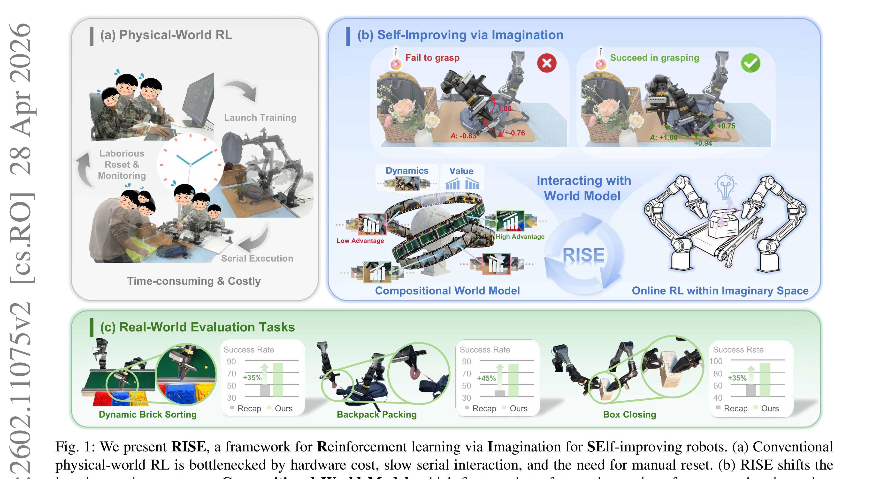

RISE: Self-Improving Robot Policy with Compositional World Model
Yang 等 · 2026 · arXiv:2602.11075 · Zotero D4HSYHH4
RISE 把昂贵真机 RL 搬进想象空间：动力学模型预测多视角未来，进度价值模型给想象轨迹打分，再用优势条件更新策略。
§1 Introduction：能否把大部分机器人 RL 交互搬到“想象空间”
行为克隆一旦偏离专家轨迹就会累积错误，在线真机 RL 虽能从失败恢复，却需要监控、复位和大量硬件时间。学习世界模型做 imagined rollout 是自然替代，但真实操控要求同时满足 action controllability、长程视觉预测和密集 progress reward；单个端到端视频模型往往难兼顾。
RISE 构建 Compositional World Model：action-conditioned video diffusion 预测候选 action chunk 的未来观察，独立 value model 对过程状态给 progress signal，再将 chunk 内平均 improvement 变成 advantage。策略先用离线标注/想象 warm start，再在世界模型中 on-policy 产生新状态和动作，形成无需每步真机执行的自改进循环。
展开原文 · 核心框架
“Reinforcement learning via Imagination for SElf-improving robots”
§2 Related Work：Dreamer、视频世界模型与 VLA advantage conditioning
Dreamer 类 latent world model 联合学习 dynamics、reward 和 value，在紧凑状态中做 imagination；生成式视频世界模型提供更强视觉先验，但动作可控、长时域和回报预测成本高。VLA 后训练如 RECAP 可给离线轨迹标 advantage，却仍受记录状态覆盖限制。
RISE 把 dynamics 与 value 分开组合：视频模型专注“动作后会看到什么”，value model 专注“进度是否改善”，避免只让视频生成终局再判断二元成功。它比真实在线 RL 省硬件，但引入 model exploitation 风险——策略可能寻找视频/value 的联合漏洞，因此必须用真机验证 imagined improvement。
§3 问题设定：SFT 到底漏掉了什么
VLA 预训练与 SFT 解决“从观测到动作的模仿”，但部署是闭环过程：动作会改变下一帧，错误会把策略带到演示没有覆盖的状态。接触任务需要在线纠错，但真机采样串行、危险且复位昂贵；单一生成模型又很难同时做好画面与价值。
dynamics model 接收历史多视角观测与动作 chunk，预测多步未来；独立 progress value model 给每个想象状态打任务进度分。
展开原文 · 核心主张
“continuously generates imaginary rollouts, estimates advantages, and updates the policy”
§4 方法总览：反馈信号怎么走
上一节明确了状态、动作与反馈，现在沿论文原图追踪训练信号。重点不是背模块名，而是判断：哪部分保持预训练先验，哪部分真的被 RL 改写。

1. 可控动力学模型预测动作条件未来
动作条件动力学模型根据当前视频状态和候选动作预测未来。它负责‘会发生什么’，训练时必须与真实轨迹对齐，否则后续 imagined reward 只是模型幻觉。
输入是什么：评测或任务明确写出的起始场景、控制条件和目标要求。它规定模型从哪里开始、允许接收哪些信息、最后应该发生什么。
这一步究竟做什么：动作条件动力学模型根据当前视频状态和候选动作预测未来。它负责‘会发生什么’，训练时必须与真实轨迹对齐，否则后续 imagined reward 只是模型幻觉。
输出到哪里：一套固定且可复现的输入条件，后续所有模型都必须在这套条件下生成或行动。这个结果会交给下一步“独立 progress value model 评估进展”继续处理。
为什么不能省略：它把未经处理的原始问题变成后续模块可以计算的输入，是整条链路的起点。
2. 独立 progress value model 评估进展
独立 progress value model 判断预测未来离目标还有多远。把动力学与价值分开，可以组合不同任务目标，也能单独诊断是预测错误还是价值判断错误。
输入是什么：来自上一步“可控动力学模型预测动作条件未来”的产物：一套固定且可复现的输入条件，后续所有模型都必须在这套条件下生成或行动。本步骤还会按论文设置读取当前条件、时间步或训练信号。
这一步究竟做什么：独立 progress value model 判断预测未来离目标还有多远。把动力学与价值分开，可以组合不同任务目标，也能单独诊断是预测错误还是价值判断错误。
输出到哪里：一组诊断数值、分类结果或评测分数；它告诉后续模块当前结果哪里好、哪里需要修正。这个结果会交给下一步“在 compositional world model 中批量 rollout”继续处理。
为什么不能省略：没有统一诊断或评分，后续模块无法知道哪里出错，也无法公平比较两个模型是否真的进步。
3. 在 compositional world model 中批量 rollout
策略在 compositional world model 中并行展开大量候选轨迹，得到低成本 imagined transitions。筛选时要限制 rollout horizon 与不确定性，防止策略专门利用模型盲区。
输入是什么：来自上一步“独立 progress value model 评估进展”的产物：一组诊断数值、分类结果或评测分数；它告诉后续模块当前结果哪里好、哪里需要修正。本步骤还会按论文设置读取当前条件、时间步或训练信号。
这一步究竟做什么：策略在 compositional world model 中并行展开大量候选轨迹，得到低成本 imagined transitions。筛选时要限制 rollout horizon 与不确定性，防止策略专门利用模型盲区。
输出到哪里：一个或多个候选未来、动作或轨迹，以及必要的中间状态。这个结果会交给下一步“用想象优势做策略自提升并回真机验证”继续处理。
为什么不能省略：学习算法只能从它见过的经历中改进；这一步决定训练数据是否覆盖成功、失败和恢复状态。
4. 用想象优势做策略自提升并回真机验证
由想象轨迹计算 advantage 并更新策略，真机主要用于周期验证与纠偏。若真实验证下降，就把失败回灌模型，而不是继续相信 imagined return；这才构成可控的自提升闭环。
输入是什么：来自上一步“在 compositional world model 中批量 rollout”的产物：一个或多个候选未来、动作或轨迹，以及必要的中间状态。本步骤还会按论文设置读取当前条件、时间步或训练信号。
这一步究竟做什么：由想象轨迹计算 advantage 并更新策略，真机主要用于周期验证与纠偏。若真实验证下降，就把失败回灌模型，而不是继续相信 imagined return；这才构成可控的自提升闭环。
输出到哪里：一个或多个候选未来、动作或轨迹，以及必要的中间状态。这是图中这条链路的最终产物，随后会进入真实执行、模型更新或指标评测。
为什么不能省略：它把前面得到的内部结果落实为可执行动作、可训练模型或可解释指标，完成从方法到结果的最后一步。
§5 机制细拆：动作、价值与更新边界
上图给出了宏观流程，但真正决定训练是否稳定的是三个接口：动作以什么粒度出现、反馈怎样变成可学习信号、哪些参数允许被更新。
§6 目标函数：把直觉压缩成可检查的量
前一节说清了信号路径，这里把核心优化目标写成教学化公式。读公式时依次检查：回报影响谁、数据支持在哪里、预训练策略受到什么约束。
- $\hat{o}_{t+k}$
- 动力学模型想象的未来观测
- $V$
- 任务进度价值模型
- $H$
- 动作块/想象窗口长度
先用真实数据预训练可控 dynamics/value，再 warm-up 策略的 advantage conditioning，最后在想象空间循环采样和更新。
§7 训练与评测：数字是在什么条件下得到的
只看最终成功率会隐藏数据预算、仿真/真机差异和基座强弱。本节把论文的实验对象与比较关系放回同一张表。
| 策略与动作 | dynamics model 接收历史多视角观测与动作 chunk，预测多步未来；独立 progress value model 给每个想象状态打任务进度分。 |
|---|---|
| 训练反馈 | 未来进度相对当前状态的增量被平均成 action-chunk advantage，随后作为条件信号更新 VLA。 |
| 更新方式 | 先用真实数据预训练可控 dynamics/value，再 warm-up 策略的 advantage conditioning，最后在想象空间循环采样和更新。 |
| 实验覆盖 | 真机任务是动态传送带积木分拣、背包整理和盒子闭合，分别强调动态跟踪、双臂协作与精细接触。 |
| 关键对照 | 纯视频 world model 只回答‘像不像’，RISE 还需要 action adherence 与 progress ranking；纯真机 RL 则受串行采样和复位限制。 |
§8 结果怎么读：证据、因果与可迁移结论
动态积木分拣、背包整理、盒子闭合分别报告超过 +35%、+45%、+35% 的绝对提升。
纯视频 world model 只回答‘像不像’，RISE 还需要 action adherence 与 progress ranking；纯真机 RL 则受串行采样和复位限制。
世界模型用于 RL 时，价值可信度往往比像素逼真度更重要。
§9 复现与工程检查
前一节判断了证据强度，复现时还要把训练信号对齐、时间尺度和数据统计逐项落地，否则“同名算法”也可能得到完全不同的结果。
- 必须测 action controllability 而不只测视频质量；value model 要做进度校准；策略是否利用模型漏洞需回真机闭环验证。
- 先跑通不加 RL 的预训练/SFT 基线，并保存逐任务成功率与失败视频。
- 同时记录环境步数、真实墙钟时间、人工介入次数、更新次数和推理延迟。
- 把奖励、终止、action chunk mask 与归一化统计做成可视化单元测试。
§10 适用边界与研究启发
想象训练只有在动力学可控且价值排序可靠时成立；模型偏差可能被策略主动利用。
世界模型用于 RL 时，价值可信度往往比像素逼真度更重要。